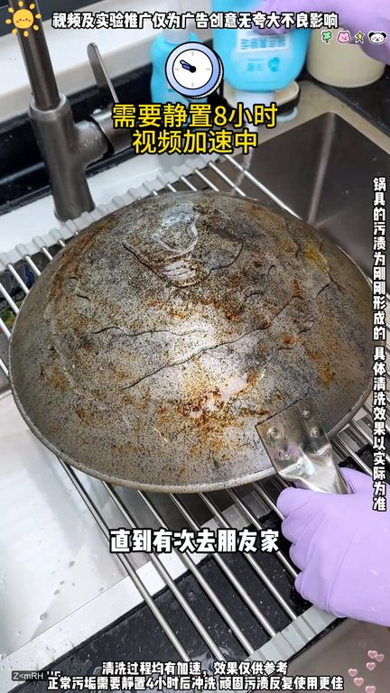
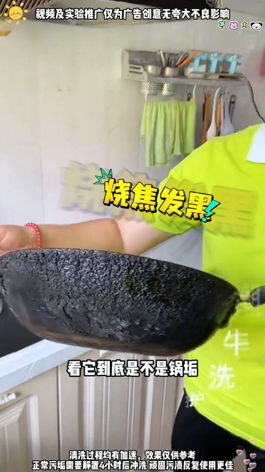
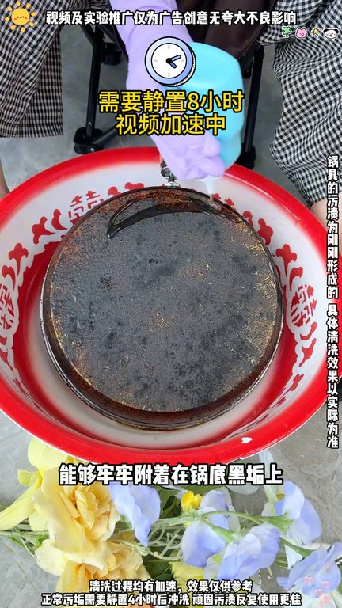
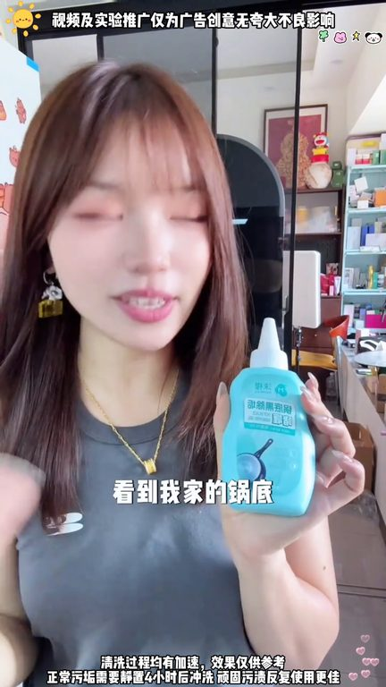

TOP 1 · 代表素材深度拆解
核心放量 稳健
视频为原始素材 HTTPS 链接；点击后加载，建议在网络环境良好时播放。
87.0万素材消耗
2.50%CTR
14.2%类目消耗占比
-0.04pp较类目均值
表现判断
该素材是类目内第 1 名，属于“核心放量”；CTR 低于类目均值。消耗体现承接规模，CTR 体现首屏与定向效率，两项应结合判断，不能仅以单指标下结论。
表达标签
口播三段式证据
开场钩子你家是不是也这样做完菜就只洗锅里面从来不洗锅底我家以前一直这么干直到有次去朋友家我进厨房帮忙一眼瞧见她家的锅干净的能反光像从没做过饭似的很多人不知道造台旁边放一瓶末蒙一年能帮你省一辆车子
中段论证你就怎么使劲擦的也擦不掉来大家看一下看它到底是不是锅构就这样的话有人不相信说它是酱油加面粉我发现很多人他只洗锅里面不洗锅底所以时间长了锅外面的爆浆特别严重你家是不是也这样不锈钢锅用久了发黄看着埋它又清理不掉我家可不是这样的但是前两天我家那烧焦发黄的脏锅怎么刷也刷不干净因为那天邀请朋友来我家吃饭一进厨房就问了我一句你这锅是没洗过吗我猛了难道他家的锅不是这样的吗…
结尾转化真的是非常好用的一款国货品牌我家是一直在用卫生清洁必备这个是我这晚上刷视频的时候跟风买的没想到这效果还真的超出我的预期我觉得用过的人肯定会回购的反正我是会回购的现在我婆婆来我家看到我家的锅底直夸我贤慧姐妹们你们也别只洗锅里了赶紧用上这个把锅底牙给她洗干净吧
有效点
- 消耗占比 14.2% 说明具备投放承接能力，但 CTR 较类目均值低 0.04pp
- 包含使用或实测表达，能够把抽象卖点转化为可感知证据
迭代动作
- 保留当前高效钩子，复制 3 个变量版本：人物、首句和首帧分别单变量测试
- 视频时长偏长，建议剪出 30–45 秒短版，仅保留钩子、两项证据和一次 CTA
- 复核功效、绝对化及价格稀缺措辞；增加适用边界和效果因人而异提示
合规关注

钩子建立 · 6.0s

场景/问题展开 · 45.4s

卖点证据 · 104.4s

转化收口 · 143.8s
查看完整口播摘要
你家是不是也这样做完菜就只洗锅里面从来不洗锅底我家以前一直这么干直到有次去朋友家我进厨房帮忙一眼瞧见她家的锅干净的能反光像从没做过饭似的很多人不知道造台旁边放一瓶末蒙一年能帮你省一辆车子婆婆说我每个锅都这么干净一看在家就是不做饭的那是因为她没用过这个末蒙锅底清洁这里如果你信得过我余震那你一定要去试试这个你看看看清楚了吗它是化掉的你看你用钢丝球刷洗十遍都不如用它清洁一次余震果然没有骗我像这种漂亮锅你用钢丝球就把它刷坏了用洗洁精你就怎么使劲擦的也擦不掉来大家看一下看它到底是不是锅构就这样的话有人不相信说它是酱油加面粉我发现很多人他只洗锅里面不洗锅底所以时间长了锅外面的爆浆特别严重你家是不是也这样不锈钢锅用久了发黄看着埋它又清理不掉我家可不是这样的但是前两天我家那烧焦发黄的脏锅怎么刷也刷不干净因为那天邀请朋友来我家吃饭一进厨房就问了我一句你这锅是没洗过吗我猛了难道他家的锅不是这样的吗一问他我这才知道原来他一直在用这款锅底出购者离我立即就要了链接下单了一瓶一到祸就迫不及待地想要试试了哇这效果不得不说我这些年的厨房清洁都算是白做了要像这样才称得上干净明亮吧而且这不是我第一次推荐吧我多次推荐是因为他做的真的很到位我真心的想让大家能够去试试去感受他的清洁效果第一他不是普通的锅底出购者离他是清洁家养户家厨军多效合一的末蒙锅底出购者离第二他是新升级第三代的者离凝胶质地能够牢牢附夺在锅底黑构上有效分解屋子瓦解油构深层清洁的同时还能延长使用粘线第三他的厨军率高达99.9%即使肉眼看不见的双东西也能清洗到最后他虽然好用但是不昂贵懂事的已经给家人安排上了要是没有这个效果我是真不敢乱说真的是用过才敢分享给您真的是非常好用的一款国货品牌我家是一直在用卫生清洁必备这个是我这晚上刷视频的时候跟风买的没想到这效果还真的超出我的预期我觉得用过的人肯定会回购的反正我是会回购的现在我婆婆来我家看到我家的锅底直夸我贤慧姐妹们你们也别只洗锅里了赶紧用上这个把锅底牙给她洗干净吧